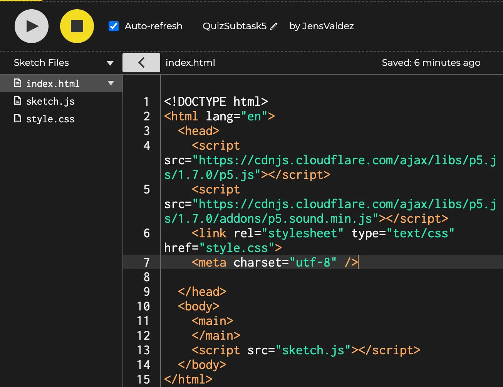
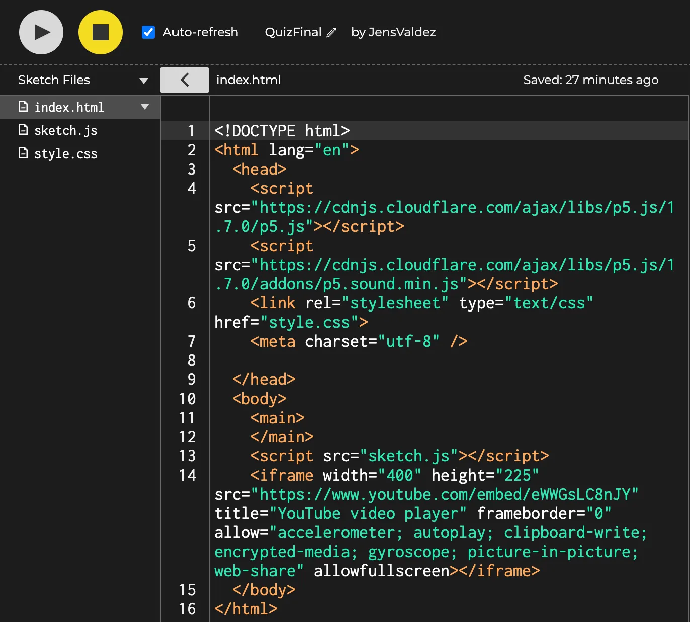

Quiz - Løsningseksempel - Delopgave 6
Tilret så den youtube video som har har baseret quizen på vises under quiz’en.
https://editor.p5js.org/JensValdez/sketches/pJO9kT0hI
Delopgave 5:
Delopgave 6:
<iframe width="400" height="225" src="https://www.youtube.com/embed/eWWGsLC8nJY"
title="YouTube video player" frameborder="0"
allow="accelerometer; autoplay; clipboard-write; encrypted-media; gyroscope; picture-in-picture; web-share"
allowfullscreen></iframe>
Note: Her kan du skifte youtube videoen i løsningseksemplet ud med en youtube video som du selv har fundet.